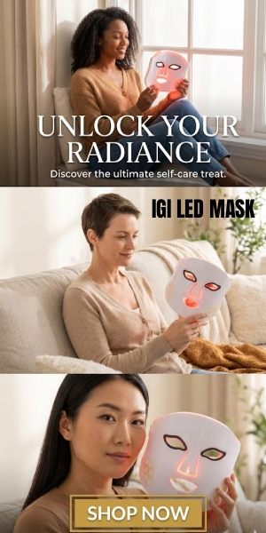

We spot what’s worth buying.
Plain-English buying guides and honest product finds across sleep, beauty, health, and tech. No sponsored picks, no marketing fluff — just what actually matters before you spend your money.
 Featured guide
Featured guideBox Spring vs Platform Bed: Which Foundation Your Mattress Actually Needs
The foundation under your mattress affects comfort, durability, and — critically — your warranty. Yet most shoppers pick one as an afterthought. Here’s how box springs and…
Read the guide →Product finds
Hand-checked products worth your money.

Product findColorDiamonds IGI LED Mask: Is This At-Home LED Mask Worth It?LED light therapy used to mean booking clinic sessions at premium prices or buying a $500+ device from a big beauty brand. Now there’s a growing middle ground: at-home LED masks… Product findTOEFL/IELTS Prep Online: Is Zebra Education's BestMyTest Worth It?Preparing for the TOEFL or IELTS is stressful enough without expensive prep courses piled on top. And the stakes are real: miss your target score and you’re paying for another… Product findZac's Sweet Shop: Is It Worth Ordering? An Honest ReviewThere’s a specific disappointment in ordering fancy sweets online: gorgeous packaging, gas-station taste inside. Zac’s Sweet Shop — the LA-based gourmet candy business that… Product findDeme by Gabriella: Is This Designer Occasionwear Worth the Price? An Honest LookEvery woman has faced the same problem: an event that matters, a closet full of nothing right, and the dread of showing up in the same dress as someone else. Deme by Gabriella —…
Product findAbbode Custom Embroidery: Is It Worth It for Personalized Gifts? An Honest ReviewFinding a gift that doesn’t feel generic is genuinely hard. Flowers die, gift cards feel lazy, and most “personalized” products online are mass-produced items with a name slapped…
Product findDeme by Gabriella: Is This Designer Occasionwear Worth the Price? An Honest LookEvery woman has faced the same problem: an event that matters, a closet full of nothing right, and the dread of showing up in the same dress as someone else. Deme by Gabriella —…
Product findAbbode Custom Embroidery: Is It Worth It for Personalized Gifts? An Honest ReviewFinding a gift that doesn’t feel generic is genuinely hard. Flowers die, gift cards feel lazy, and most “personalized” products online are mass-produced items with a name slapped…
 Product findRe/Done Jeans: Worth the Premium? An Honest LookJeans are jeans — until they’re $265+. Re/Done is the LA brand that made “repurposed vintage Levi’s, deconstructed and resewn” into a luxury category, hand-cut from actual vintage…
Product findCopperJoe Compression Sleeves: Do They Actually Help? An Honest ReviewIf you’ve got an achy knee, a cranky elbow, or feet that hurt by the end of the day, you’ve probably seen the ads. Copper-infused compression sleeves promise pain relief, better…
Product findRe/Done Jeans: Worth the Premium? An Honest LookJeans are jeans — until they’re $265+. Re/Done is the LA brand that made “repurposed vintage Levi’s, deconstructed and resewn” into a luxury category, hand-cut from actual vintage…
Product findCopperJoe Compression Sleeves: Do They Actually Help? An Honest ReviewIf you’ve got an achy knee, a cranky elbow, or feet that hurt by the end of the day, you’ve probably seen the ads. Copper-infused compression sleeves promise pain relief, better…
 Product findB'alam Candles & Diffusers: Worth It for a Calmer Home?Walk into someone’s home and it smells amazing — not perfumey, not overpowering, just calm and intentional — and you’ll want to know their secret. Usually it’s one of two things:…
Product findB'alam Candles & Diffusers: Worth It for a Calmer Home?Walk into someone’s home and it smells amazing — not perfumey, not overpowering, just calm and intentional — and you’ll want to know their secret. Usually it’s one of two things:…
 Product findEvago Travel Search: Is This AI Flight Tool Worth Using?Booking a flight in 2026 shouldn’t feel like a part-time job. You check the airline site, then a comparison site, then another comparison site, each showing a different price for…
Product findEvago Travel Search: Is This AI Flight Tool Worth Using?Booking a flight in 2026 shouldn’t feel like a part-time job. You check the airline site, then a comparison site, then another comparison site, each showing a different price for…
 Product findEonon Android Car Stereo: Worth the Upgrade? An Honest LookThere’s a special frustration in driving a perfectly good car with a stereo from 2011. No CarPlay, no backup camera, Bluetooth that connects when it feels like it. A new car costs…
Product findEonon Android Car Stereo: Worth the Upgrade? An Honest LookThere’s a special frustration in driving a perfectly good car with a stereo from 2011. No CarPlay, no backup camera, Bluetooth that connects when it feels like it. A new car costs…
 Product findBASE-K Scalp Care: Does It Actually Work for Thinning Hair?Here’s an uncomfortable truth about hair loss products: most of them are aimed at the hair, when the real problem starts underneath it. An unhealthy scalp — clogged, dry, inflamed…
Product findBASE-K Scalp Care: Does It Actually Work for Thinning Hair?Here’s an uncomfortable truth about hair loss products: most of them are aimed at the hair, when the real problem starts underneath it. An unhealthy scalp — clogged, dry, inflamed…
 Product findEdify CBD Gummies: Worth Trying? An Honest Look at the Kentucky Hemp BrandThe CBD market has a trust problem. Shelves and websites are flooded with gummies that make vague wellness promises, hide their lab results, and leave you guessing what’s actually…
Product findEdify CBD Gummies: Worth Trying? An Honest Look at the Kentucky Hemp BrandThe CBD market has a trust problem. Shelves and websites are flooded with gummies that make vague wellness promises, hide their lab results, and leave you guessing what’s actually…
 Product findScorpify Phone Cases: Are They Actually Protective? An Honest ReviewYour phone case has one job: keep your phone alive when gravity wins. But most “cute” cases fail at that job, and most “rugged” cases look like they belong on a construction site.…
Product findScorpify Phone Cases: Are They Actually Protective? An Honest ReviewYour phone case has one job: keep your phone alive when gravity wins. But most “cute” cases fail at that job, and most “rugged” cases look like they belong on a construction site.…
 Product findAfrican Net Sponge: The Exfoliating Bath Upgrade Worth Knowing AboutHere’s something most people outside West Africa have never tried: a long, stretchy nylon net — known as sapo in Nigeria or jampe in Senegal — that replaces your washcloth,…
Product findPluginsForWP Review: Premium WordPress Plugins at 95% Off — Worth It?Premium WordPress plugins are expensive. A single popular plugin can run $59–$199 per year, and a serious site needs several — SEO, caching, forms, page builder, security. Add it…
Product findMeedo Designs Rooftop Tents: An Honest Look at the Apolle LineSleeping on the ground in a tent you have to pitch every night gets old fast — especially when the ground is rocky, wet, or home to things that crawl. Rooftop tents fix that: your…
Product findAfrican Net Sponge: The Exfoliating Bath Upgrade Worth Knowing AboutHere’s something most people outside West Africa have never tried: a long, stretchy nylon net — known as sapo in Nigeria or jampe in Senegal — that replaces your washcloth,…
Product findPluginsForWP Review: Premium WordPress Plugins at 95% Off — Worth It?Premium WordPress plugins are expensive. A single popular plugin can run $59–$199 per year, and a serious site needs several — SEO, caching, forms, page builder, security. Add it…
Product findMeedo Designs Rooftop Tents: An Honest Look at the Apolle LineSleeping on the ground in a tent you have to pitch every night gets old fast — especially when the ground is rocky, wet, or home to things that crawl. Rooftop tents fix that: your…
 Product findMinteefy Glass Wall Art: Is Printed Glass Worth It? An Honest LookYou’ve probably had the same experience: a canvas print that looked great online arrives, looks fine for a year, then quietly fades into the background — colors dull, corners sag,…
Product findMinteefy Glass Wall Art: Is Printed Glass Worth It? An Honest LookYou’ve probably had the same experience: a canvas print that looked great online arrives, looks fine for a year, then quietly fades into the background — colors dull, corners sag,…
 Product findAlphaBiolabs DNA Test Kits: An Honest Review of Their Home TestingNeeding a paternity answer, or wanting to check a health trait from home, is stressful enough without wondering whether the company behind the kit is legitimate. Home DNA testing…
Product findAlphaBiolabs DNA Test Kits: An Honest Review of Their Home TestingNeeding a paternity answer, or wanting to check a health trait from home, is stressful enough without wondering whether the company behind the kit is legitimate. Home DNA testing…
 Product findTouchBeauty Sonic Facial Brush: Worth It? An Honest LookIf you wash your face with just your hands and cleanser, you’re doing okay. But plenty of people notice their skin never feels quite clean enough — makeup lingers along the…
Product findTouchBeauty Sonic Facial Brush: Worth It? An Honest LookIf you wash your face with just your hands and cleanser, you’re doing okay. But plenty of people notice their skin never feels quite clean enough — makeup lingers along the…
Buying guides
Deep dives that explain what actually matters.
 Buying guideNew Mattress Break-In Period: How Long It Takes and What to ExpectYour new mattress feels different from the one in the store — firmer, maybe, or just… unfamiliar. Before you panic, know this: almost every mattress needs a break-in period, and…
Buying guideNew Mattress Break-In Period: How Long It Takes and What to ExpectYour new mattress feels different from the one in the store — firmer, maybe, or just… unfamiliar. Before you panic, know this: almost every mattress needs a break-in period, and…
 Buying guideMattress Protectors: Are They Worth It? (Honest Answer: Yes)A mattress protector is the least exciting purchase in the sleep world — and one of the smartest. It sits between you and your mattress, quietly doing three jobs: blocking spills…
Buying guideMattress Protectors: Are They Worth It? (Honest Answer: Yes)A mattress protector is the least exciting purchase in the sleep world — and one of the smartest. It sits between you and your mattress, quietly doing three jobs: blocking spills…
 Buying guideWhen to Replace Your Mattress: 9 Signs It's Time for a New OneMost people keep their mattress years longer than they should. It’s not because they’re cheap — it’s because mattress decline is gradual. You don’t wake up one day on a terrible…
Buying guideWhen to Replace Your Mattress: 9 Signs It's Time for a New OneMost people keep their mattress years longer than they should. It’s not because they’re cheap — it’s because mattress decline is gradual. You don’t wake up one day on a terrible…
 Buying guideBedroom Humidifiers: Do They Actually Help You Sleep?Every winter, heated indoor air turns bedrooms into low-grade deserts — dry throat at 3 AM, a nose that won’t stop running or won’t stop being stuffed, static shocks from the…
Buying guideBedroom Humidifiers: Do They Actually Help You Sleep?Every winter, heated indoor air turns bedrooms into low-grade deserts — dry throat at 3 AM, a nose that won’t stop running or won’t stop being stuffed, static shocks from the…
 Buying guideExercise Timing and Sleep: Morning vs. Evening WorkoutsExercise is one of the most reliable sleep improvers known — better evidence than most supplements, gadgets, and teas combined. People who exercise regularly fall asleep faster,…
Buying guideExercise Timing and Sleep: Morning vs. Evening WorkoutsExercise is one of the most reliable sleep improvers known — better evidence than most supplements, gadgets, and teas combined. People who exercise regularly fall asleep faster,…
 Buying guideHow to Nap Right: Length, Timing, and When Naps BackfireNapping has a PR problem: it’s either a productivity superpower or a sign of laziness, depending on who you ask. The truth is more boring and more useful — naps are a tool, and…
Buying guideHow to Nap Right: Length, Timing, and When Naps BackfireNapping has a PR problem: it’s either a productivity superpower or a sign of laziness, depending on who you ask. The truth is more boring and more useful — naps are a tool, and…
 Buying guideBlue Light and Sleep: Glasses, Settings, and the Habits That Actually Matter“Blue light ruins your sleep” is one of those claims that’s directionally true and specifically exaggerated. Yes, light at night disrupts sleep. But the fixation on blue light —…
Buying guideBlue Light and Sleep: Glasses, Settings, and the Habits That Actually Matter“Blue light ruins your sleep” is one of those claims that’s directionally true and specifically exaggerated. Yes, light at night disrupts sleep. But the fixation on blue light —…
 Buying guideBedroom Temperature for Sleep: What the Research Actually SaysAsk a sleep researcher for their single most underrated sleep tip and there’s a good chance the answer is “cool your bedroom.” Temperature is one of the few sleep factors with…
Buying guideBedroom Temperature for Sleep: What the Research Actually SaysAsk a sleep researcher for their single most underrated sleep tip and there’s a good chance the answer is “cool your bedroom.” Temperature is one of the few sleep factors with…
 Buying guideSleep Masks: How to Pick One That Doesn't Hurt (and Actually Blocks Light)A sleep mask is the cheapest blackout solution ever made. No installation, no measuring windows, works in hotel rooms and on red-eyes. But anyone who’s tried a bad one knows the…
Buying guideSleep Masks: How to Pick One That Doesn't Hurt (and Actually Blocks Light)A sleep mask is the cheapest blackout solution ever made. No installation, no measuring windows, works in hotel rooms and on red-eyes. But anyone who’s tried a bad one knows the…
 Buying guideWeighted Blankets: The Honest Guide (Weight, Benefits, and Who Should Skip Them)Weighted blankets went from occupational therapy tool to mainstream sleep product in just a few years, carried by a simple promise: that gentle, even pressure calms your nervous…
Buying guideWeighted Blankets: The Honest Guide (Weight, Benefits, and Who Should Skip Them)Weighted blankets went from occupational therapy tool to mainstream sleep product in just a few years, carried by a simple promise: that gentle, even pressure calms your nervous…
 Buying guideSunrise Alarm Clocks and Wake-Up Lights: Are They Worth It?Being ripped out of deep sleep by a blaring alarm is one of the least pleasant ways to start a day. Sunrise alarm clocks promise a gentler alternative: a light that brightens…
Buying guideSunrise Alarm Clocks and Wake-Up Lights: Are They Worth It?Being ripped out of deep sleep by a blaring alarm is one of the least pleasant ways to start a day. Sunrise alarm clocks promise a gentler alternative: a light that brightens…
 Buying guideBlackout Curtains for Better Sleep: What Actually Blocks LightLight is the enemy of melatonin. Even the glow of a streetlamp leaking around your blinds can suppress the hormone that tells your body it’s nighttime — and you don’t have to see…
Buying guideBlackout Curtains for Better Sleep: What Actually Blocks LightLight is the enemy of melatonin. Even the glow of a streetlamp leaking around your blinds can suppress the hormone that tells your body it’s nighttime — and you don’t have to see…
 Buying guideDo White Noise Machines Actually Help You Sleep? What to Know Before You BuyA partner who snores. Traffic outside the window. A neighbor with strong opinions about 2 AM. White noise machines promise to smooth all of it into one forgettable hum — and for a…
Buying guideDo White Noise Machines Actually Help You Sleep? What to Know Before You BuyA partner who snores. Traffic outside the window. A neighbor with strong opinions about 2 AM. White noise machines promise to smooth all of it into one forgettable hum — and for a…
 Buying guideBeauty Sleep Is Real: How Sleep Affects Your Skin and a Simple Nighttime Routine“Get your beauty sleep” sounds like something grandmothers say. But dermatologists will tell you it’s real: sleep is when your skin does most of its repair work. Blood flow to the…
Buying guideBeauty Sleep Is Real: How Sleep Affects Your Skin and a Simple Nighttime Routine“Get your beauty sleep” sounds like something grandmothers say. But dermatologists will tell you it’s real: sleep is when your skin does most of its repair work. Blood flow to the…
 Buying guideBest Mattress for Combination Sleepers Who Change Position All NightIf you fall asleep on your back, wake up on your side, and somehow end up on your stomach by morning, you’re a combination sleeper — and you’re in the majority. Most people don’t…
Buying guideBest Mattress for Combination Sleepers Who Change Position All NightIf you fall asleep on your back, wake up on your side, and somehow end up on your stomach by morning, you’re a combination sleeper — and you’re in the majority. Most people don’t…
 Buying guideKing vs Queen vs Cal King: Which Mattress Size Should You Actually Buy?Mattress shopping has a size problem: most people buy the size they think they should want, not the size that fits their room, their sleep habits, and their budget. A king in a…
Buying guideKing vs Queen vs Cal King: Which Mattress Size Should You Actually Buy?Mattress shopping has a size problem: most people buy the size they think they should want, not the size that fits their room, their sleep habits, and their budget. A king in a…
 Buying guideBest Mattress for Couples: Motion Isolation That Actually WorksSharing a bed means sharing every toss, turn, and 2 AM bathroom trip — unless your mattress is good at keeping movement to itself. Motion isolation (how little movement transfers…
Buying guideBest Mattress for Couples: Motion Isolation That Actually WorksSharing a bed means sharing every toss, turn, and 2 AM bathroom trip — unless your mattress is good at keeping movement to itself. Motion isolation (how little movement transfers…
 Buying guideHow to Choose a Pillow by Sleep PositionHere’s a fact most pillow marketing ignores: the “best pillow” doesn’t exist in the abstract. A pillow that’s perfect for a back sleeper will wreck a side sleeper’s neck, and the…
Buying guideHow to Choose a Pillow by Sleep PositionHere’s a fact most pillow marketing ignores: the “best pillow” doesn’t exist in the abstract. A pillow that’s perfect for a back sleeper will wreck a side sleeper’s neck, and the…
 Buying guideMemory Foam vs Down vs Latex Pillows: Honest ComparisonWalk into any bedding aisle and you’ll face the same three contenders: memory foam, down (and its alternatives), and latex. Each has passionate defenders and real trade-offs, and…
Buying guideMemory Foam vs Down vs Latex Pillows: Honest ComparisonWalk into any bedding aisle and you’ll face the same three contenders: memory foam, down (and its alternatives), and latex. Each has passionate defenders and real trade-offs, and…
 Buying guideBest Pillow for Side Sleepers: Loft, Firmness & What to AvoidSide sleepers have the most demanding pillow requirements of any sleep position. When you sleep on your side, there’s a gap between your head and the mattress roughly the width of…
Buying guideBest Pillow for Side Sleepers: Loft, Firmness & What to AvoidSide sleepers have the most demanding pillow requirements of any sleep position. When you sleep on your side, there’s a gap between your head and the mattress roughly the width of…
 Buying guideDo You Need a Mattress Topper? When It Helps and When It's a WasteA mattress topper is a 2-to-4-inch layer that sits on top of your mattress to change how it feels — softer, cooler, more pressure-relieving. Toppers are a fraction of the price of…
Buying guideDo You Need a Mattress Topper? When It Helps and When It's a WasteA mattress topper is a 2-to-4-inch layer that sits on top of your mattress to change how it feels — softer, cooler, more pressure-relieving. Toppers are a fraction of the price of…
 Buying guideMattress Warranties: What's Covered, What's Not, and the Fine PrintA “10-year warranty” sounds reassuring — until you try to use it and discover that the sagging in the middle of your mattress doesn’t count, or that the stain from last year…
Buying guideMattress Warranties: What's Covered, What's Not, and the Fine PrintA “10-year warranty” sounds reassuring — until you try to use it and discover that the sagging in the middle of your mattress doesn’t count, or that the stain from last year…
 Buying guideMattress Trial Periods Explained: How to Actually Use Your 100 NightsMost online mattresses now come with a “100-night trial” or even a full year to decide. It sounds generous — sleep on it for months, send it back if you don’t love it. But the…
Buying guideMattress Trial Periods Explained: How to Actually Use Your 100 NightsMost online mattresses now come with a “100-night trial” or even a full year to decide. It sounds generous — sleep on it for months, send it back if you don’t love it. But the…
 Buying guideSaatva vs DreamCloud: Two Luxury Hybrids ComparedSaatva and DreamCloud both sell the same dream: a luxury hotel-style mattress without the luxury showroom markup. Both are hybrids with plush, premium-looking covers. Both are…
Buying guideSaatva vs DreamCloud: Two Luxury Hybrids ComparedSaatva and DreamCloud both sell the same dream: a luxury hotel-style mattress without the luxury showroom markup. Both are hybrids with plush, premium-looking covers. Both are…
 Buying guidePurple vs Helix: Gel Grid vs Hybrid — Which Sleeps Better?Purple and Helix get compared constantly, but they’re selling fundamentally different ideas about comfort. Purple’s entire identity is the GelFlex Grid — a layer of hyper-elastic…
Buying guidePurple vs Helix: Gel Grid vs Hybrid — Which Sleeps Better?Purple and Helix get compared constantly, but they’re selling fundamentally different ideas about comfort. Purple’s entire identity is the GelFlex Grid — a layer of hyper-elastic…
 Buying guideNectar vs Casper: Which Memory Foam Mattress Is the Better Buy?Nectar and Casper are two of the biggest names in bed-in-a-box memory foam, and shoppers constantly pit them against each other. They look similar on the surface — both ship…
Buying guideNectar vs Casper: Which Memory Foam Mattress Is the Better Buy?Nectar and Casper are two of the biggest names in bed-in-a-box memory foam, and shoppers constantly pit them against each other. They look similar on the surface — both ship…
 Buying guideAre Expensive Mattresses Worth It? Where the Money Actually GoesSomewhere between $1,500 and $5,000, mattress shopping stops being about sleep and starts being about story. The materials get fancier names. The showrooms get quieter. The…
Buying guideAre Expensive Mattresses Worth It? Where the Money Actually GoesSomewhere between $1,500 and $5,000, mattress shopping stops being about sleep and starts being about story. The materials get fancier names. The showrooms get quieter. The…
 Buying guideBest Mattress Under $1000: The Sweet Spot for Quality and ValueAsk mattress people where the value peaks and most will point to the same range: roughly $700 to $1,000 for a queen. Below it, you’re managing compromises. Above it, you’re paying…
Buying guideBest Mattress Under $1000: The Sweet Spot for Quality and ValueAsk mattress people where the value peaks and most will point to the same range: roughly $700 to $1,000 for a queen. Below it, you’re managing compromises. Above it, you’re paying…
 Buying guideBest Mattress Under $500: How to Get Real Quality at a Low PriceFive hundred dollars is the line where mattress shopping gets honest. Below it, you’re hunting for value — not luxury, not premium materials, but a bed that supports your back,…
Buying guideBest Mattress Under $500: How to Get Real Quality at a Low PriceFive hundred dollars is the line where mattress shopping gets honest. Below it, you’re hunting for value — not luxury, not premium materials, but a bed that supports your back,…
 Buying guideLatex vs Memory Foam: Pros, Cons, and Who Should Buy WhichMemory foam and latex are the two premium comfort materials in mattresses — and they feel like opposites. Memory foam is the slow, contouring hug that cradles you. Latex is the…
Buying guideLatex vs Memory Foam: Pros, Cons, and Who Should Buy WhichMemory foam and latex are the two premium comfort materials in mattresses — and they feel like opposites. Memory foam is the slow, contouring hug that cradles you. Latex is the…
 Buying guidePocketed Coils vs Bonnell Coils: Which Innerspring Is Worth Your Money?Open up two innerspring mattresses and you’ll find two completely different machines inside. One uses an old interconnected wire system from the 1800s; the other uses hundreds of…
Buying guidePocketed Coils vs Bonnell Coils: Which Innerspring Is Worth Your Money?Open up two innerspring mattresses and you’ll find two completely different machines inside. One uses an old interconnected wire system from the 1800s; the other uses hundreds of…
 Buying guideMemory Foam Density Explained: The Number That Predicts How Long Your Mattress LastsThe number one complaint about memory foam mattresses isn’t comfort — it’s sagging. The mattress feels great for a year, then a permanent dent forms where you sleep, and your back…
Buying guideMemory Foam Density Explained: The Number That Predicts How Long Your Mattress LastsThe number one complaint about memory foam mattresses isn’t comfort — it’s sagging. The mattress feels great for a year, then a permanent dent forms where you sleep, and your back…
 Buying guideBest Cooling Mattress for Hot Sleepers: Materials That Actually WorkWaking up sweaty at 3 AM is miserable — and it’s one of the most common mattress complaints there is. The industry’s response has been a flood of “cooling technology”: gel swirls,…
Buying guideBest Cooling Mattress for Hot Sleepers: Materials That Actually WorkWaking up sweaty at 3 AM is miserable — and it’s one of the most common mattress complaints there is. The industry’s response has been a flood of “cooling technology”: gel swirls,…
 Buying guideBest Mattress for Back Pain: What the Research Says About FirmnessBack pain sends more people mattress shopping than any other reason. And the mattress industry has been happy to sell them certainty — “orthopedic,” “chiropractor approved,” “firm…
Buying guideBest Mattress for Back Pain: What the Research Says About FirmnessBack pain sends more people mattress shopping than any other reason. And the mattress industry has been happy to sell them certainty — “orthopedic,” “chiropractor approved,” “firm…
 Buying guideBest Mattress for Heavy People: What Actually Holds Up Over 230 LbsMost mattress advice is written for average-weight sleepers — and most mattresses are built for them too. If you weigh over 230 pounds, the standard guidance breaks down:…
Buying guideBest Mattress for Heavy People: What Actually Holds Up Over 230 LbsMost mattress advice is written for average-weight sleepers — and most mattresses are built for them too. If you weigh over 230 pounds, the standard guidance breaks down:…
 Buying guideBest Mattress for Stomach Sleepers (and Why Most Mattresses Fail Them)Let’s be honest up front: stomach sleeping is the toughest position on both your body and your mattress. Your midsection — the heaviest part of you — wants to sink while your head…
Buying guideBest Mattress for Stomach Sleepers (and Why Most Mattresses Fail Them)Let’s be honest up front: stomach sleeping is the toughest position on both your body and your mattress. Your midsection — the heaviest part of you — wants to sink while your head…
 Buying guideBest Mattress for Back Sleepers: Firmness, Support & What to Look For in 2026Back sleeping is the position chiropractors love — weight spread over the largest surface area, spine in its natural alignment, no twisted neck, no crushed shoulder. The catch:…
Buying guideBest Mattress for Back Sleepers: Firmness, Support & What to Look For in 2026Back sleeping is the position chiropractors love — weight spread over the largest surface area, spine in its natural alignment, no twisted neck, no crushed shoulder. The catch:…
 Buying guideBest Mattress for Side Sleepers: What to Look for in 2026Around 7 in 10 people sleep on their side — it’s the most common sleep position by far. It’s also the position most mattresses get wrong. Side sleeping concentrates your entire…
Buying guideBest Mattress for Side Sleepers: What to Look for in 2026Around 7 in 10 people sleep on their side — it’s the most common sleep position by far. It’s also the position most mattresses get wrong. Side sleeping concentrates your entire…
 Buying guideHow to Buy a Great Mattress on a Budget (Without Getting Scammed)Here’s a secret the mattress industry doesn’t advertise: you don’t need to spend a fortune to sleep well. A well-chosen budget mattress beats an expensive wrong-for-you mattress…
Buying guideHow to Buy a Great Mattress on a Budget (Without Getting Scammed)Here’s a secret the mattress industry doesn’t advertise: you don’t need to spend a fortune to sleep well. A well-chosen budget mattress beats an expensive wrong-for-you mattress…
 Buying guideMattress Firmness Explained: How to Pick the Right Firmness for Your Sleep PositionFirmness is the single most misunderstood part of buying a mattress. Pick wrong and even an expensive, well-made mattress will leave you aching. Pick right and a mid-range…
Buying guideMattress Firmness Explained: How to Pick the Right Firmness for Your Sleep PositionFirmness is the single most misunderstood part of buying a mattress. Pick wrong and even an expensive, well-made mattress will leave you aching. Pick right and a mid-range…
 Buying guideMemory Foam vs Hybrid vs Innerspring: Which Mattress Type Is Right for You?Shopping for a mattress is confusing because every brand claims their technology is the best. Cut through the noise: nearly every mattress sold today falls into one of three…
Buying guideMemory Foam vs Hybrid vs Innerspring: Which Mattress Type Is Right for You?Shopping for a mattress is confusing because every brand claims their technology is the best. Cut through the noise: nearly every mattress sold today falls into one of three…
No brand can pay for placement, a ranking, or a kind word. When we cover a product type, it’s because it suits the buyer.
We read the specs, the fine print, and the independent reviews — then explain what actually predicts quality, in language anyone can follow.
The guides are free. When you buy through our links we may earn a commission at no extra cost to you — how it works.